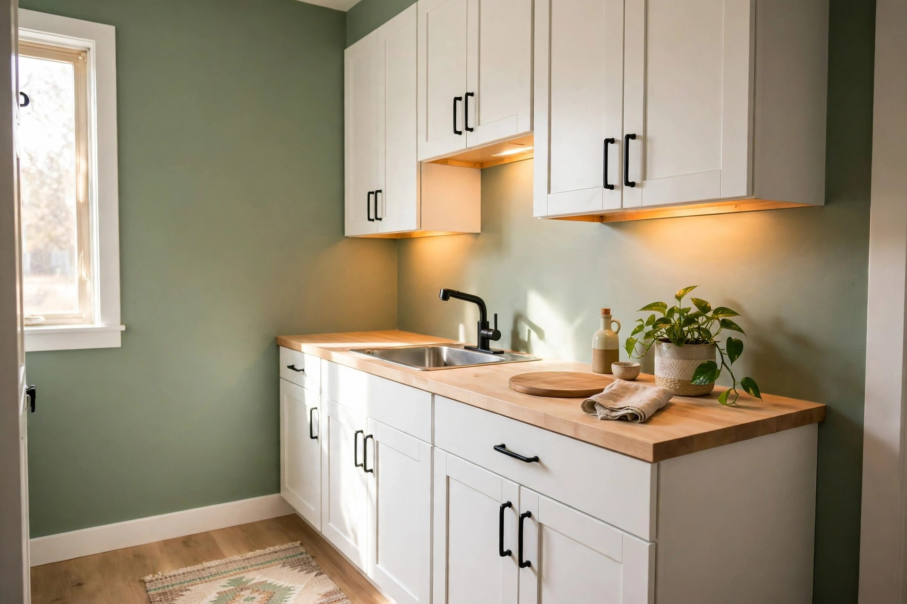

Small Kitchen
Small Kitchen Makeover Under $100: Paint, Handles and Light
Intro
A kitchen makeover does not need new cabinets. In a small kitchen, three cheap changes — paint, handles and light — do almost all the work. This guide is a weekend plan: two days, about $93, and a kitchen that looks new on Monday morning.
This guide has 12 steps for a small kitchen makeover under $100. Each step lists what it costs, and the plan is written for a renter — no drilling, no permanent change, nothing you cannot undo.
The order matters: declutter first, then paint, then handles, then light. Each step makes the next one look better, and if you run out of time on Sunday, the kitchen still looks better than it did on Friday — because the paint and the handles are already done.

1. Saturday morning: empty and clean — $0
Take everything out of one cabinet at a time, wipe the shelves, and put back only what you use. A makeover starts with empty surfaces, not new paint. Two hours of decluttering makes every later step look better.
2. Paint one wall — $12–$18
One wall in pale sage or warm cream changes the whole room. One small tin covers it, and a roller does the job in an hour. Paint the wall behind the counter, where you see it most, and leave the rest white.
3. Swap the cabinet handles — $15–$25
New handles are the fastest way to make old cabinets look new. Unscrew the old ones, screw in the new — ten minutes per cabinet. Matte black or brushed brass handles suit almost any kitchen, and you can take them with you when you move.
4. Add an LED strip under the cabinet — $10–$15
A stick-on LED strip under the wall cabinet lights the counter and makes the new paint glow. It is the single best lighting upgrade for a small kitchen, and it takes ten minutes to fit.
5. Peel-and-stick backsplash — $12–$20
A peel-and-stick tile backsplash behind the hob covers old marks and adds a finished look. One pack covers the strip, and it peels off cleanly when you move out. Press each sheet firmly and leave it a day.
6. New knobs on the drawers — $5–$10
If the handles budget is tight, swap just the drawer knobs. Small round wooden or ceramic knobs cost a few dollars each and change the feel of the whole kitchen. Match them to the new handles for a planned look.
7. Contact paper on the counter — $8–$12
Adhesive contact paper in a marble or wood pattern covers a stained counter for the price of one roll. Smooth it on with a cloth, trim the edges, and the counter looks new. It wipes clean and peels off later.
8. An open shelf instead of one cabinet door — $0–$5
Take one cabinet door off its hinges and leave the shelf open. Put your prettiest plates and mugs on display, and the kitchen feels bigger because the eye can see into the cabinet. Keep the door safe to put back later.
9. A new rug by the sink — $8–$12
A small washable rug in front of the sink adds colour and comfort, and it is the cheapest decor in the whole plan. Choose a flat-weave rug that washes easily, in a colour that matches the new wall.
10. A plant on the windowsill — $5–$8
One green plant — a herb you can cook with, or a trailing plant in a small pot — brings life to the new paint. It costs a few dollars, and it makes the kitchen feel finished in a way paint alone cannot.
11. New art or a framed print — $5–$10
One framed print on the empty wall, hung with adhesive strips, finishes the room. A food print, a market poster, or a simple line drawing all work. Keep the frame light so the strips hold it safely.
12. Sunday evening: clean the grout and the hob — $0
Scrub the grout lines and polish the hob, and the whole kitchen shines. A makeover is not finished until it is clean — and this step costs nothing but twenty minutes.
Conclusion
A $100 makeover is really three changes: paint one wall, swap the handles, and add light. Everything else — the backsplash, the rug, the plant — is the finishing touch. Do it in one weekend, in the order above, and on Monday the kitchen will feel like a different room.
Budget recap
- Paint: ~$15
- Handles and knobs: ~$25
- LED strip: ~$12
- Backsplash: ~$16
- Rug, plant and print: ~$25
Total for the whole weekend makeover: ~$93 — under the $100 budget.
Pinterest pin titles (3 fresh pins, same article, different designs)
- "Small Kitchen Makeover Under $100 — Paint, Handles and Light"
- "Remake Your Small Kitchen in One Weekend — $93"
- "12 Steps, 2 Days, Under $100: Small Kitchen Makeover"